10 Do's and Don'ts of Infographic Chart Design
Data Visualization
May 14, 2018

Charts have been used to communicate information clearly and effectively for centuries. These days we see charts as commonplace–a type of visual that everyone can, and should, make for infographics, reports, and presentations.
That’s because charts, when done right, can help viewers understand complex data. They can help reveal patterns, provide context, and describe relationships within datasets.
But have you ever stopped to wonder what makes a chart effective?
Do you know what separates a good chart design from a bad one?
It’s far too easy to overlook about the basics of good chart design.
That’s why I’ve compiled this comprehensive list of chart design do’s and don’ts. I’ve taken what we know about human perception and cognition to give you 10 tips on how to design charts that communicate effectively.
1. Do use the right chart for your data
We can’t talk about chart design without first discussing chart choices.
If you’re like most people, you probably choose your charts based on how easy it is to create said chart in a basic charting tool. Conventional tools like Excel give you easy access to the most basic chart types, like the pie chart, the bar chart, and the line chart.

But with Venngage, creating less conventional charts like bubble clouds, treemaps, icon charts, pyramids, timelines, word clouds, tables and maps is just as easy.
With all of these options, how should you choose the best chart for your data?
You should pick charts based two things:
- What you want to say about your data.
- The type of data you have.
Bar charts, for example, are best for showing comparisons of categorical data (data broken up into discrete categories).
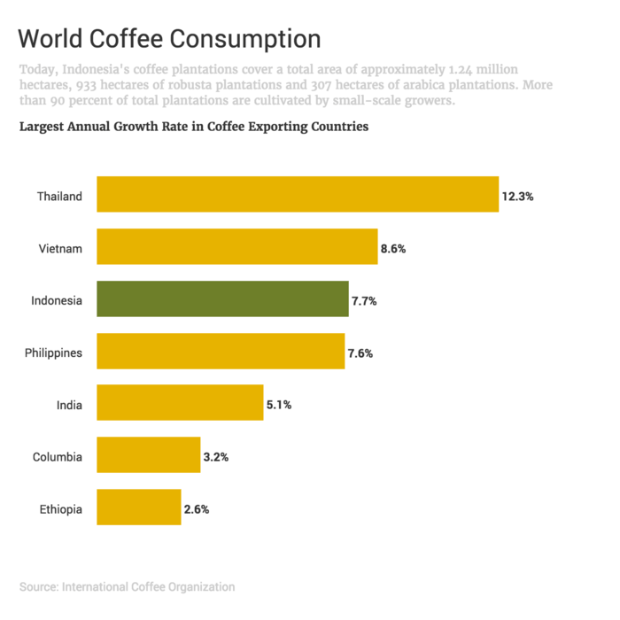
Line charts, on the other hand, are better suited to tracking changes over time with continuous data (data that falls along a scale).
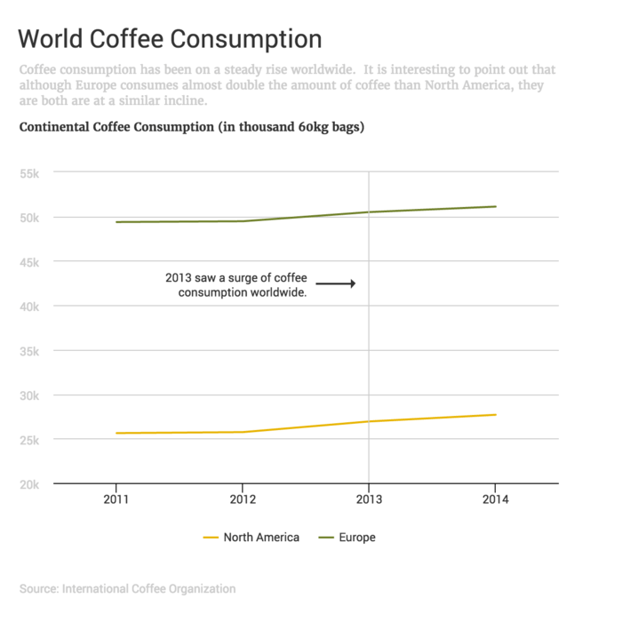
These two charts above show two different types of data and tell two different stories. They’re effective because the format of each chart aligns properly with the type of data it’s displaying.
Now, if I were to go ahead and outline the best chart for type of data, we would never get to the other important principles of chart design.
So I’m going to move on.
But if you’re intrigued and want to learn more, check out my complete rundown on how to choose the best charts for your data.
2. Don’t (necessarily) use legends in your chart design
Most tools like Excel and Google Sheets give charts a legend by default. These legends are used to tell readers which colors, patterns, or symbols represent which data series in the chart.
But most of the time, legends actually hinder readers’ understanding of charts.
To understand a chart with a legend, readers are forced to scan back and forth between the legend and the chart itself. Every time they make that switch, they’re using some of their limited memory resources to keep the details of the legend in mind.
A more effective way of representing that same information is to label data points and data series directly on the chart.
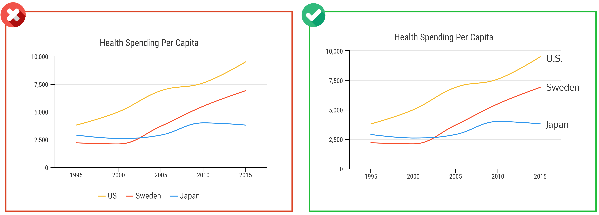
By placing labels as close as possible to their respective data points, you can reduce the work required of your reader to interpret your chart.
There are, however, some exceptions to this rule.
Exception 1
Legends can be useful when you have multiple data points that belong to a few categories, when adding a legend can help you eliminate many labels.
The legend for this bubble cloud, for example, works well because it features only two categories, which don’t take much effort to remember. And if the legend wasn’t there, the chart would have to have 13 extra labels (to indicate whether each bubble falls in the “male” or “female” category).
Exception 2
High-density charts that display many points in a small area should not be labeled directly.
High-density charts like scatterplots can get cluttered quickly when you start adding labels.
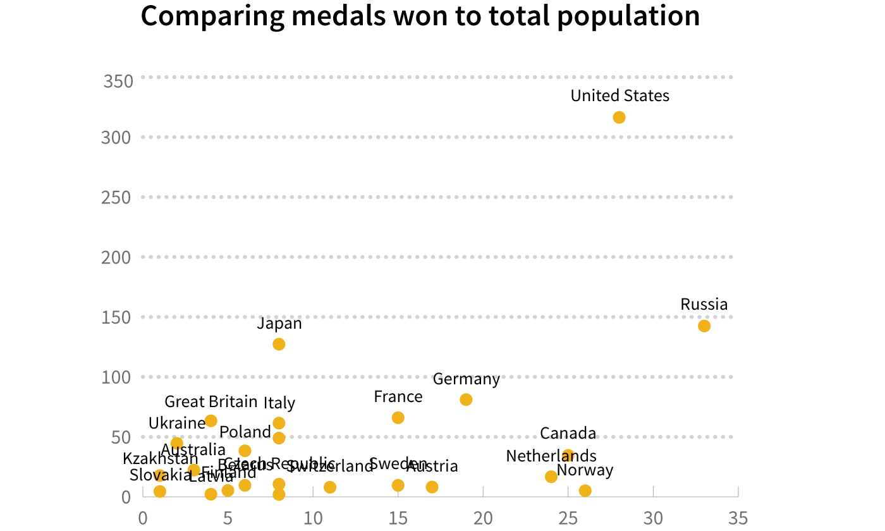
3. Do highlight some details and downplay others
Each chart should have a clear focus. It should be created with a specific goal in mind–to express or support some argument.
The visual focus of the chart (the thing that stands out most when you first look at the chart) should directly reinforce that goal.
This chart, for example, is clearly telling us that cancer is the leading cause of death in Canada:
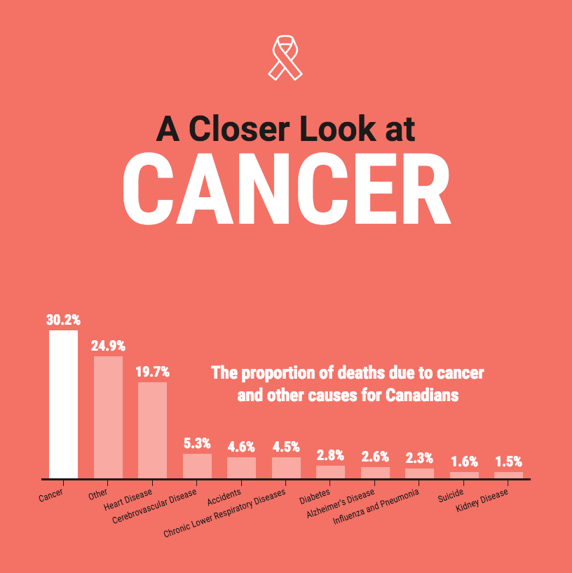
Most of the visual elements on the page are pushing us towards making that conclusion. The big bright bar on the left tells us that 30.2% of deaths are due to cancer. Meanwhile, the big bold title tells us that we’re looking at the proportion of deaths due to cancer and other causes in Canada.
To create a clear visual focus like you see above, you can adjust the visual salience of various elements. That is, you can use visual characteristics like color, size, or weight to draw attention to some details and suppress others.
Reserve bright, contrasting colors for the most important elements and use soft, muted colors to push less important elements into the background.
This technique works best if you don’t have too many colors going on in your graphic. Too many bright, saturated colors will compete with each other for your attention and you’ll be left with a muddled mess.
Look at the difference between these two charts:

Using small, bright spots of color is an easy way to create visual salience (that visual quality that makes elements pop off the page). Harness visual salience to focus your reader’s attention and guide their eye through each chart.
Want more information on using visual salience in infographics? Check out our guide to learn how to choose colors that will captivate your audience.
4. Don’t introduce unnecessary complexity
Keep the structural elements of your graphs as minimal as possible.
Data visualization guru Edward Tufte advocates for charts with a high data-ink ratio, meaning that much of the ink used to print a chart on a page should be used to directly represent data.
Or, as information designer Jonathan Corum phrased it in a recent talk about designing science graphics:
“Show the content, not the frame.”
Follow their lead and remove unnecessary chart elements like outlines, gridlines, and backgrounds to keep the focus on the data. Make the essential elements like axes and tick marks clear but inconspicuous.
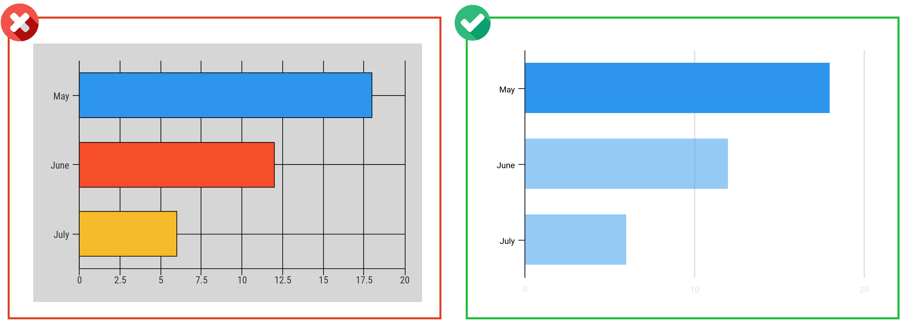
5. Do encourage comparison in your chart design
While you should simplify the structural chart elements, you don’t want to oversimplify your data.
Charts and infographics that compare multiple data series can be much more persuasive than oversimplified charts or isolated numbers.
Allowing readers to make their own visual comparisons can nurture that powerful “a-ha” moment that we’re all looking for.
The typical approach to creating comparisons is to include multiple datasets in a single chart.
But there’s also something called the “small multiples” approach that’s a bit of a game changer. With the small multiples approach, you line up a few small, simple charts side-by-side, and give each chart a different variable or set of data.
This technique allows you to compare many more variables than you could in a single chart.
Check out this fun visualization from The Pudding about some of the things we hate:
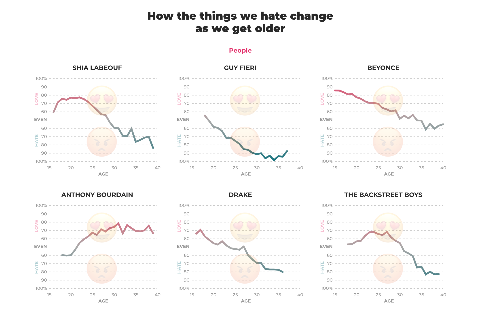
They could have combined all of the lines into one chart, but it wouldn’t have had nearly the same impact. By using small multiples, they were able to use color (a gradient from warm to cool) to express sentiment, instead of using it to distinguish between lots of lines on one chart.
To make the small multiples approach work for you, keep these constraints in mind:
- Apply the same visual treatment to each chart and use the same axes and scaling.
- Line up and arrange charts in a meaningful order (usually by time or magnitude) so they’re easy to compare.
- Make each chart small, simple, and understandable at a glance.
6. Don’t overlook the power of words in your chart design
So far I’ve talked a lot about data, but words are just as important to chart design as numbers are.
Words, in the form of titles, captions, and annotations, can be used to frame a narrative around each chart. These basic chart elements are your opportunity to tell your readers the story that’s in your data.
The way most of us were taught to write chart titles back in elementary school is to simply state the variables visualized in the chart. Like “Density of Precious Metals”, for example.
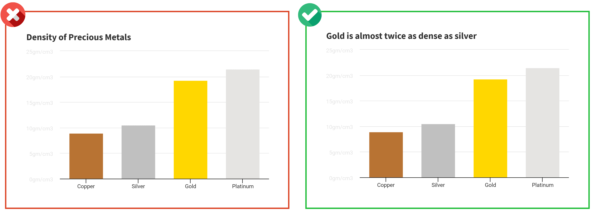
It’s descriptive, but it doesn’t tell us anything about the actual data.
This type of title is a missed opportunity. It could have stated: “Gold is nearly twice as dense as silver”, if that’s the point we were trying to make. It could have told us something more meaningful about the chart.
Alternatively, you can keep the typical title structure, but add an extra annotation as a feature of your chart design.
The best example I’ve seen of this approach is in a graphic about driving deaths in the United States from the New York Times. The author has scattered tiny snippets of insight amongst the data–pointing out important dates to provide context where necessary.
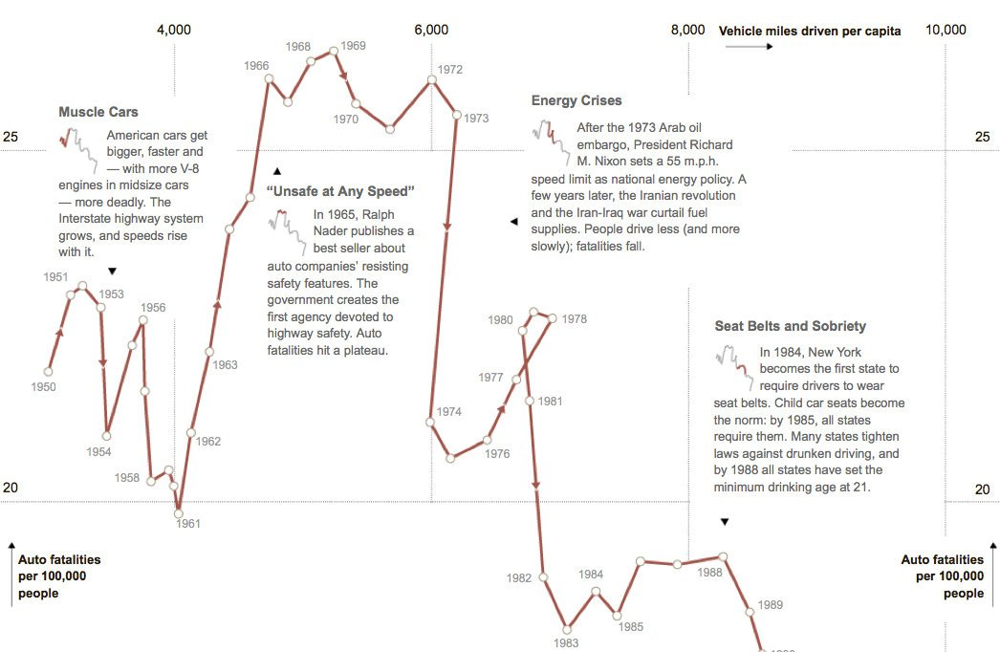
Like this data journalist has, do your best to make the language in your chart succinct and impactful.
Use titles to convey the conclusions that you want your reader to take away from the graph. Use annotations to provide context can help the viewer find things they relate to within the data.
7. Do show the right amount of data
An essential part of proper chart design is choosing the right amount of data to display.
You need to find that balance between complexity and clarity to create a chart that’s both legible and persuasive.
Nathan Yau sums up the idea of “showing” the data quite nicely with this visual:
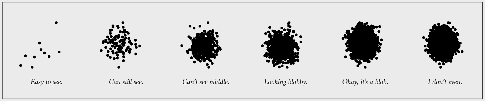
Ideally, in an infographic, you want to find the you want to find the lowest common denominator. The smallest amount of data that will support the point you’re trying to make.
But there are a few factors at play here: your audience, your message, and the data itself.
Some audiences will expect more context, more detail, and more data before they’ll take your word as fact. Other audiences will be more concerned about the time it takes to read your graph, and will want to see less data presented more simply.
Play with the level of detail in your data to find the balance that’s right for your audience.
8. Don’t stick with standard chart sizes
Similarly, play with chart size and scale to find the best fit for your data.
The aspect ratio of a chart can play a significant role in how the data is perceived, especially for slope-based charts like the line chart, area chart, and scatterplot.
Different aspect ratios can make the same data seem much more (or less) dramatic.
A general rule of thumb is to find the aspect ratio at which the average slope of the data line is about 45°. William Cleveland, a great of the data visualization world, has suggested that slopes are most readable at this angle.

But you might be asking: how can I make a weird aspect ratio work in a normal page size?
Answer: let the proportions of the chart dictate the layout of the page.
Work other page content, like descriptions and headers, around the chart.
At the same time, avoid data distortion. Make any unorthodox scaling obvious, start your axes at 0, and use consistent axis intervals.
9. Do the math
Most of us aren’t good at mental math. And we’re even worse at doing math based on what we see in charts.
We struggle to keep complex bits of imagery in our minds while we make comparisons between lines, bars, or points in a chart.Instead of asking your viewer to make these visual comparisons on the fly: do the math yourself and chart the result.
This chart from the New York Times plots the percent change in average hourly wages year-over-year instead of absolute hourly wages, making it easy to immediately see the big drops:
Even if you’re not a data journalist, you can make charts that are just as effective. Bar charts that show percent change, like the one below, are simpler to make but still drive those key ideas home.
So get out that calculator and do some math! Your readers will thank you.
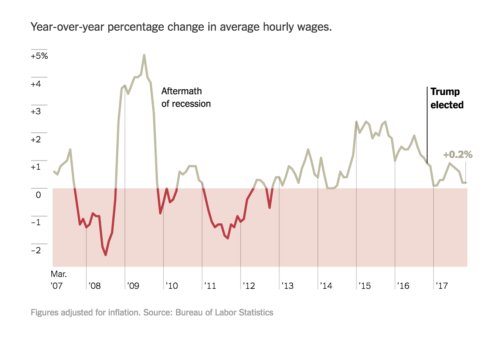
10. Do make your chart design memorable
According to a study led by Harvard researcher Michelle Borkin, a number of factors can make charts and data visualizations more memorable.
I’ve already covered a few of these factors above, including using descriptive text and titles to hammer key messages home, minimizing the eye-movement required to understand a visual, and highlighting important data points.
But that’s not all you can do.
Try to come up with new ways to display your data. Charts that are unique are often the most engaging and memorable.
An inspiration of mine, Mona Chalabi, has absolutely mastered the art of the unique, memorable visual. Check out this creative visual, where she uses familiar fruits to show us the size of our organs:
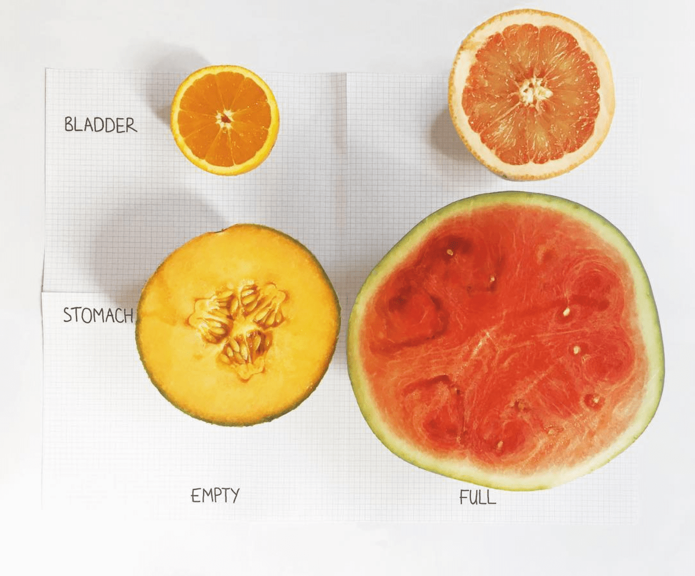
If you can find a new perspective or tie your data to concrete, relatable examples, your audience will get a kick out of it, and will be more likely to remember it.
This article was originally published by me on Venngage's blog.